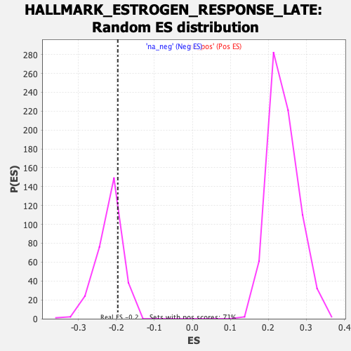

| | | Dataset | PFS |
| Phenotype | NoPhenotypeAvailable |
| Upregulated in class | na_neg |
| GeneSet | HALLMARK_ESTROGEN_RESPONSE_LATE |
| Enrichment Score (ES) | -0.19625658 |
| Normalized Enrichment Score (NES) | -0.89212555 |
| Nominal p-value | 0.7758621 |
| FDR q-value | 0.7480697 |
| FWER p-Value | 1.0 |
Table: GSEA Results Summary
 Fig 1: Enrichment plot: HALLMARK_ESTROGEN_RESPONSE_LATE
Fig 1: Enrichment plot: HALLMARK_ESTROGEN_RESPONSE_LATE
Profile of the Running ES Score & Positions of GeneSet Members on the Rank Ordered List
| SYMBOL | RANK IN GENE LIST | RANK METRIC SCORE | RUNNING ES | CORE ENRICHMENT | | 1 | CD44 | 33 | 6.548 | 0.0307 | No |
| 2 | PDZK1 | 365 | 3.702 | 0.0319 | No |
| 3 | WFS1 | 411 | 3.531 | 0.0471 | No |
| 4 | CISH | 549 | 3.204 | 0.0558 | No |
| 5 | PAPSS2 | 669 | 3.005 | 0.0646 | No |
| 6 | CHPT1 | 1096 | 2.472 | 0.0548 | No |
| 7 | HR | 1324 | 2.269 | 0.0542 | No |
| 8 | HOMER2 | 1387 | 2.220 | 0.0620 | No |
| 9 | NBL1 | 1425 | 2.189 | 0.0710 | No |
| 10 | AMFR | 1426 | 2.189 | 0.0818 | No |
| 11 | IMPA2 | 1493 | 2.147 | 0.0890 | No |
| 12 | PGR | 1574 | 2.099 | 0.0953 | No |
| 13 | NRIP1 | 1797 | 1.976 | 0.0935 | No |
| 14 | RAB31 | 1857 | 1.941 | 0.1001 | No |
| 15 | IDH2 | 1861 | 1.938 | 0.1095 | No |
| 16 | SERPINA5 | 2028 | 1.850 | 0.1101 | No |
| 17 | PRSS23 | 2106 | 1.807 | 0.1151 | No |
| 18 | DCXR | 2344 | 1.709 | 0.1113 | No |
| 19 | GPER1 | 2361 | 1.702 | 0.1189 | No |
| 20 | TJP3 | 2437 | 1.665 | 0.1232 | No |
| 21 | OPN3 | 2499 | 1.636 | 0.1282 | No |
| 22 | SCUBE2 | 2583 | 1.604 | 0.1318 | No |
| 23 | RET | 2627 | 1.587 | 0.1375 | No |
| 24 | CA12 | 2661 | 1.574 | 0.1436 | No |
| 25 | FKBP5 | 2878 | 1.487 | 0.1397 | No |
| 26 | ST6GALNAC2 | 2881 | 1.486 | 0.1470 | No |
| 27 | LAMC2 | 2933 | 1.470 | 0.1516 | No |
| 28 | TIAM1 | 3108 | 1.409 | 0.1496 | No |
| 29 | RABEP1 | 3527 | 1.283 | 0.1343 | No |
| 30 | IGFBP4 | 3592 | 1.263 | 0.1373 | No |
| 31 | SLC7A5 | 3617 | 1.255 | 0.1422 | No |
| 32 | ADD3 | 3669 | 1.240 | 0.1457 | No |
| 33 | PLAC1 | 3769 | 1.211 | 0.1466 | No |
| 34 | HSPB8 | 4031 | 1.140 | 0.1388 | No |
| 35 | S100A9 | 4115 | 1.118 | 0.1400 | No |
| 36 | JAK2 | 4380 | 1.055 | 0.1316 | No |
| 37 | PRKAR2B | 4406 | 1.049 | 0.1355 | No |
| 38 | CDC20 | 4407 | 1.048 | 0.1407 | No |
| 39 | SERPINA3 | 4562 | 1.007 | 0.1377 | No |
| 40 | TPSAB1 | 4594 | 0.999 | 0.1410 | No |
| 41 | CALCR | 4648 | 0.989 | 0.1432 | No |
| 42 | MYOF | 4672 | 0.986 | 0.1469 | No |
| 43 | PDLIM3 | 4682 | 0.984 | 0.1513 | No |
| 44 | NCOR2 | 4781 | 0.959 | 0.1509 | No |
| 45 | PTPN6 | 4915 | 0.933 | 0.1487 | No |
| 46 | PDCD4 | 4967 | 0.925 | 0.1506 | No |
| 47 | CXCL12 | 4987 | 0.921 | 0.1542 | No |
| 48 | LTF | 5036 | 0.911 | 0.1562 | No |
| 49 | GLA | 5101 | 0.899 | 0.1574 | No |
| 50 | CHST8 | 5189 | 0.879 | 0.1572 | No |
| 51 | DNAJC1 | 5268 | 0.863 | 0.1574 | No |
| 52 | LLGL2 | 5373 | 0.842 | 0.1562 | No |
| 53 | KLK10 | 5432 | 0.829 | 0.1573 | No |
| 54 | ZFP36 | 5494 | 0.815 | 0.1582 | No |
| 55 | GALE | 5518 | 0.810 | 0.1610 | No |
| 56 | IGSF1 | 5571 | 0.802 | 0.1623 | No |
| 57 | TST | 5743 | 0.771 | 0.1573 | No |
| 58 | FABP5 | 5860 | 0.751 | 0.1550 | No |
| 59 | GAL | 6088 | 0.707 | 0.1468 | No |
| 60 | SLC22A5 | 6126 | 0.699 | 0.1483 | No |
| 61 | BAG1 | 6169 | 0.690 | 0.1495 | No |
| 62 | KRT19 | 6382 | 0.652 | 0.1418 | No |
| 63 | MOCS2 | 6508 | 0.631 | 0.1385 | No |
| 64 | FRK | 6584 | 0.620 | 0.1376 | No |
| 65 | CKB | 6740 | 0.595 | 0.1326 | No |
| 66 | SLC26A2 | 7059 | 0.541 | 0.1188 | No |
| 67 | KRT13 | 7092 | 0.535 | 0.1198 | No |
| 68 | FAM102A | 7366 | 0.489 | 0.1081 | No |
| 69 | FDFT1 | 7456 | 0.476 | 0.1058 | No |
| 70 | BCL2 | 7646 | 0.445 | 0.0983 | No |
| 71 | XRCC3 | 7704 | 0.435 | 0.0975 | No |
| 72 | HSPA4L | 7854 | 0.412 | 0.0918 | No |
| 73 | OVOL2 | 8092 | 0.379 | 0.0814 | No |
| 74 | SLC16A1 | 8106 | 0.377 | 0.0826 | No |
| 75 | MAPK13 | 8410 | 0.333 | 0.0686 | No |
| 76 | AFF1 | 8547 | 0.316 | 0.0631 | No |
| 77 | PERP | 8636 | 0.304 | 0.0601 | No |
| 78 | SIAH2 | 8702 | 0.294 | 0.0581 | No |
| 79 | AGR2 | 9012 | 0.248 | 0.0434 | No |
| 80 | SLC9A3R1 | 9229 | 0.217 | 0.0333 | No |
| 81 | CYP4F11 | 9249 | 0.214 | 0.0334 | No |
| 82 | BTG3 | 9419 | 0.190 | 0.0256 | No |
| 83 | GJB3 | 9435 | 0.187 | 0.0257 | No |
| 84 | JAK1 | 9500 | 0.176 | 0.0233 | No |
| 85 | CPE | 9684 | 0.150 | 0.0145 | No |
| 86 | ASCL1 | 9803 | 0.130 | 0.0091 | No |
| 87 | ABHD2 | 9994 | 0.104 | -0.0002 | No |
| 88 | IL6ST | 10090 | 0.091 | -0.0047 | No |
| 89 | MEST | 10131 | 0.087 | -0.0063 | No |
| 90 | UGDH | 10147 | 0.084 | -0.0067 | No |
| 91 | XBP1 | 10179 | 0.080 | -0.0079 | No |
| 92 | MYB | 10250 | 0.068 | -0.0112 | No |
| 93 | COX6C | 10279 | 0.064 | -0.0123 | No |
| 94 | RNASEH2A | 10362 | 0.053 | -0.0163 | No |
| 95 | ABCA3 | 10475 | 0.036 | -0.0219 | No |
| 96 | TSPAN13 | 10498 | 0.034 | -0.0229 | No |
| 97 | FOS | 10511 | 0.032 | -0.0233 | No |
| 98 | KCNK5 | 10641 | 0.013 | -0.0300 | No |
| 99 | TH | 10670 | 0.009 | -0.0314 | No |
| 100 | MAPT | 10681 | 0.007 | -0.0318 | No |
| 101 | FARP1 | 10704 | 0.005 | -0.0330 | No |
| 102 | SGK1 | 10749 | -0.003 | -0.0352 | No |
| 103 | CDC6 | 10751 | -0.003 | -0.0353 | No |
| 104 | CLIC3 | 10905 | -0.023 | -0.0431 | No |
| 105 | LSR | 10945 | -0.028 | -0.0449 | No |
| 106 | ELOVL5 | 11006 | -0.037 | -0.0479 | No |
| 107 | CA2 | 11067 | -0.046 | -0.0507 | No |
| 108 | CXCL14 | 11186 | -0.061 | -0.0565 | No |
| 109 | RBBP8 | 11388 | -0.090 | -0.0665 | No |
| 110 | TFF1 | 11506 | -0.107 | -0.0720 | No |
| 111 | NMU | 11553 | -0.115 | -0.0738 | No |
| 112 | PLXNB1 | 11677 | -0.132 | -0.0795 | No |
| 113 | SLC27A2 | 11750 | -0.145 | -0.0825 | No |
| 114 | TSTA3 | 11853 | -0.158 | -0.0870 | No |
| 115 | DHCR7 | 11869 | -0.160 | -0.0870 | No |
| 116 | BATF | 11914 | -0.168 | -0.0885 | No |
| 117 | CCND1 | 12014 | -0.187 | -0.0927 | No |
| 118 | TOB1 | 12109 | -0.200 | -0.0965 | No |
| 119 | NAB2 | 12283 | -0.224 | -0.1044 | No |
| 120 | AREG | 12309 | -0.228 | -0.1046 | No |
| 121 | TNNC1 | 12318 | -0.230 | -0.1038 | No |
| 122 | DLG5 | 12378 | -0.239 | -0.1057 | No |
| 123 | KLF4 | 12433 | -0.250 | -0.1073 | No |
| 124 | KLK11 | 12486 | -0.258 | -0.1087 | No |
| 125 | TOP2A | 12611 | -0.284 | -0.1137 | No |
| 126 | FOXC1 | 12914 | -0.331 | -0.1277 | No |
| 127 | CD9 | 13046 | -0.353 | -0.1327 | No |
| 128 | PCP4 | 13121 | -0.366 | -0.1347 | No |
| 129 | SLC29A1 | 13287 | -0.389 | -0.1413 | No |
| 130 | TMPRSS3 | 13297 | -0.392 | -0.1399 | No |
| 131 | TFAP2C | 13307 | -0.394 | -0.1384 | No |
| 132 | SNX10 | 13372 | -0.405 | -0.1397 | No |
| 133 | RPS6KA2 | 13432 | -0.415 | -0.1407 | No |
| 134 | NPY1R | 13439 | -0.416 | -0.1389 | No |
| 135 | SLC24A3 | 13697 | -0.459 | -0.1499 | No |
| 136 | CAV1 | 13977 | -0.512 | -0.1619 | No |
| 137 | PTGES | 14165 | -0.547 | -0.1688 | No |
| 138 | CDH1 | 14189 | -0.552 | -0.1673 | No |
| 139 | ITPK1 | 14249 | -0.563 | -0.1675 | No |
| 140 | UNC13B | 14262 | -0.565 | -0.1654 | No |
| 141 | MDK | 14337 | -0.577 | -0.1663 | No |
| 142 | TFPI2 | 14368 | -0.583 | -0.1650 | No |
| 143 | RAPGEFL1 | 14420 | -0.593 | -0.1647 | No |
| 144 | ISG20 | 14461 | -0.602 | -0.1638 | No |
| 145 | PRLR | 14482 | -0.606 | -0.1618 | No |
| 146 | FLNB | 14619 | -0.634 | -0.1657 | No |
| 147 | TRIM29 | 14737 | -0.661 | -0.1685 | No |
| 148 | EMP2 | 14795 | -0.674 | -0.1681 | No |
| 149 | STIL | 15045 | -0.727 | -0.1774 | No |
| 150 | ALDH3A2 | 15057 | -0.730 | -0.1744 | No |
| 151 | ST14 | 15140 | -0.749 | -0.1749 | No |
| 152 | ARL3 | 15370 | -0.799 | -0.1828 | No |
| 153 | TPD52L1 | 15443 | -0.818 | -0.1825 | No |
| 154 | ATP2B4 | 15455 | -0.823 | -0.1790 | No |
| 155 | FKBP4 | 15525 | -0.842 | -0.1784 | No |
| 156 | ALDH3B1 | 15656 | -0.879 | -0.1807 | No |
| 157 | PKP3 | 15786 | -0.914 | -0.1829 | No |
| 158 | SORD | 15876 | -0.940 | -0.1828 | No |
| 159 | MICB | 15968 | -0.965 | -0.1828 | No |
| 160 | OLFM1 | 16021 | -0.981 | -0.1806 | No |
| 161 | METTL3 | 16318 | -1.073 | -0.1906 | Yes |
| 162 | SLC1A4 | 16411 | -1.105 | -0.1899 | Yes |
| 163 | SERPINA1 | 16535 | -1.155 | -0.1905 | Yes |
| 164 | TFF3 | 16569 | -1.167 | -0.1865 | Yes |
| 165 | SCARB1 | 16591 | -1.177 | -0.1817 | Yes |
| 166 | HPRT1 | 16620 | -1.185 | -0.1773 | Yes |
| 167 | SEMA3B | 16623 | -1.186 | -0.1715 | Yes |
| 168 | DHRS2 | 16772 | -1.239 | -0.1731 | Yes |
| 169 | SULT2B1 | 16860 | -1.270 | -0.1713 | Yes |
| 170 | NXT1 | 16915 | -1.290 | -0.1677 | Yes |
| 171 | ID2 | 16970 | -1.311 | -0.1640 | Yes |
| 172 | DNAJC12 | 16985 | -1.320 | -0.1582 | Yes |
| 173 | BLVRB | 17036 | -1.341 | -0.1541 | Yes |
| 174 | CELSR2 | 17046 | -1.342 | -0.1480 | Yes |
| 175 | KIF20A | 17269 | -1.440 | -0.1523 | Yes |
| 176 | PLK4 | 17306 | -1.456 | -0.1470 | Yes |
| 177 | HMGCS2 | 17391 | -1.497 | -0.1439 | Yes |
| 178 | ANXA9 | 17449 | -1.524 | -0.1393 | Yes |
| 179 | CACNA2D2 | 17674 | -1.653 | -0.1427 | Yes |
| 180 | IL17RB | 17702 | -1.671 | -0.1358 | Yes |
| 181 | TPBG | 17719 | -1.681 | -0.1283 | Yes |
| 182 | FGFR3 | 18302 | -2.094 | -0.1481 | Yes |
| 183 | DUSP2 | 18328 | -2.116 | -0.1389 | Yes |
| 184 | PTGER3 | 18403 | -2.194 | -0.1319 | Yes |
| 185 | ACOX2 | 18608 | -2.412 | -0.1305 | Yes |
| 186 | SLC2A8 | 18635 | -2.443 | -0.1197 | Yes |
| 187 | DYNLT3 | 18665 | -2.476 | -0.1090 | Yes |
| 188 | PPIF | 18723 | -2.538 | -0.0994 | Yes |
| 189 | SFN | 18798 | -2.621 | -0.0902 | Yes |
| 190 | SOX3 | 18800 | -2.623 | -0.0773 | Yes |
| 191 | SCNN1A | 18812 | -2.650 | -0.0647 | Yes |
| 192 | GINS2 | 18913 | -2.771 | -0.0562 | Yes |
| 193 | ETFB | 18953 | -2.869 | -0.0440 | Yes |
| 194 | EGR3 | 19100 | -3.132 | -0.0360 | Yes |
| 195 | ASS1 | 19293 | -3.822 | -0.0271 | Yes |
| 196 | CCNA1 | 19301 | -3.869 | -0.0083 | Yes |
| 197 | CYP26B1 | 19325 | -3.991 | 0.0103 | Yes |
Table: GSEA details [plain text format]

Fig 2: HALLMARK_ESTROGEN_RESPONSE_LATE: Random ES distribution
Gene set null distribution of ES for HALLMARK_ESTROGEN_RESPONSE_LATE